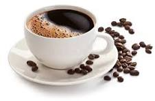

Zedrick James Fernandez
Zedrick is the founder and owner of Zeddie's Cafe. With a passion for coffee and a commitment to quality, he has dedicated himself to creating a unique space where customers can enjoy exceptional drinks and snacks.

Our Story
Zeddie's Cafe was founded in 2026 with the goal of providing a warm and inviting space for people to enjoy high-quality coffee and snacks. Our team is passionate about creating a welcoming environment where customers can relax, socialize, and savor our delicious offerings.
We take pride in sourcing the finest ingredients for our drinks and snacks, ensuring that every item on our menu meets our high standards of quality and taste. Whether you're stopping by for a quick coffee or spending time with friends, we strive to make every visit to Zeddie's Cafe a memorable experience.